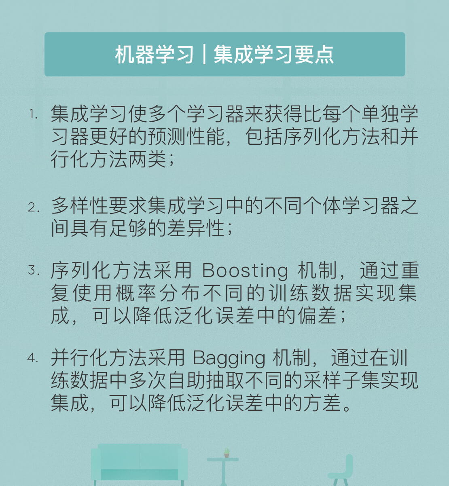

- 00 开篇词 人工智能：新时代的必修课.md.html
- 01 数学基础 九层之台，起于累土：线性代数.md.html
- 02 数学基础 月有阴晴圆缺，此事古难全：概率论.md.html
- 03 数学基础 窥一斑而知全豹：数理统计.md.html
- 04 数学基础 不畏浮云遮望眼：最优化方法.md.html
- 05 数学基础 万物皆数，信息亦然：信息论.md.html
- 06 数学基础 明日黄花迹难寻：形式逻辑.md.html
- 07 机器学习 数山有路，学海无涯：机器学习概论.md.html
- 08 机器学习 简约而不简单：线性回归.md.html
- 09 机器学习 大道至简：朴素贝叶斯方法.md.html
- 10 机器学习 衍化至繁：逻辑回归.md.html
- 11 机器学习 步步为营，有章可循：决策树.md.html
- 12 机器学习 穷则变，变则通：支持向量机.md.html
- 13 机器学习 三个臭皮匠，赛过诸葛亮：集成学习.md.html
- 14 机器学习 物以类聚，人以群分：聚类分析.md.html
- 15 机器学习 好钢用在刀刃上：降维学习.md.html
- 16 人工神经网络 道法自然，久藏玄冥：神经网络的生理学背景.md.html
- 17 人工神经网络 一个青年才俊的意外死亡：神经元与感知器.md.html
- 18 人工神经网络 左手信号，右手误差：多层感知器.md.html
- 19 人工神经网络 各人自扫门前雪：径向基函数神经网络.md.html
- 20 人工神经网络 看不见的手：自组织特征映射.md.html
- 21 人工神经网络 水无至清，人莫至察：模糊神经网络.md.html
- 22 深度学习 空山鸣响，静水流深：深度学习概述.md.html
- 23 深度学习 前方有路，未来可期：深度前馈网络.md.html
- 24 深度学习 小树不修不直溜：深度学习中的正则化.md.html
- 25 深度学习 玉不琢不成器：深度学习中的优化.md.html
- 26 深度学习 空竹里的秘密：自编码器.md.html
- 27 深度学习 困知勉行者勇：深度强化学习.md.html
- 28 深度学习框架下的神经网络 枯木逢春：深度信念网络.md.html
- 29 深度学习框架下的神经网络 见微知著：卷积神经网络.md.html
- 30 深度学习框架下的神经网络 昨日重现：循环神经网络.md.html
- 31 深度学习框架下的神经网络 左右互搏：生成式对抗网络.md.html
- 32 深度学习框架下的神经网络 三重门：长短期记忆网络.md.html
- 33 深度学习之外的人工智能 一图胜千言：概率图模型.md.html
- 34 深度学习之外的人工智能 乌合之众的逆袭：集群智能.md.html
- 35 深度学习之外的人工智能 授人以鱼不如授人以渔：迁移学习.md.html
- 36 深度学习之外的人工智能 滴水藏海：知识图谱.md.html
- 37 应用场景 你是我的眼：计算机视觉.md.html
- 38 应用场景 嘿, Siri：语音处理.md.html
- 39 应用场景 心有灵犀一点通：对话系统.md.html
- 40 应用场景 数字巴别塔：机器翻译.md.html
- 一键到达 人工神经网络复习课.md.html
- 一键到达 应用场景复习课.md.html
- 一键到达 数学基础复习课.md.html
- 一键到达 机器学习复习课.md.html
- 一键到达 深度学习之外的人工智能复习课.md.html
- 一键到达 深度学习复习课.md.html
- 一键到达 深度学习框架下的神经网络复习课.md.html
- 推荐阅读 我与人工智能的故事.md.html
- 新书 《裂变：秒懂人工智能的基础课》.md.html
- 直播回顾 机器学习必备的数学基础.md.html
- 第2季回归 这次我们来聊聊机器学习.md.html
- 结课 溯洄从之，道阻且长.md.html
- 课外谈 “人工智能基础课”之二三闲话.md.html
- （课外辅导）人工神经网络 拓展阅读参考书.md.html
- （课外辅导）数学基础 拓展阅读参考书.md.html
- （课外辅导）机器学习 拓展阅读参考书.md.html
- （课外辅导）深度学习 拓展阅读参考书.md.html
- 捐赠
13 机器学习 三个臭皮匠，赛过诸葛亮：集成学习
在无线通信中，有一种广受欢迎的“MIMO”传输技术。MIMO的全称是多输入多输出（Multiple Input Multiple Output），其早期配置是在发送端和接收端同时布置多个发射机和多个接收机，每个发射机发送相同的信号副本，而每个接收机则接收到来自多个发射机的不同信号，这些信号经历的衰减是相互独立的。这样一来，在接收端多个信号同时被严重衰减的概率就会以指数形式减小，通过获得分集增益带来误码率的下降与信道容量的提升。
无线通信中的分集思想在机器学习中的对应就是集成学习。集成学习正是使用多个个体学习器来获得比每个单独学习器更好的预测性能。
监督学习的任务是通过假设空间搜索来找到能够对特定问题给出良好预测的假设。但问题是即使这样的假设存在，能否找到也在两可之间。因而集成学习的作用就是将多个可以得到假设整合为单个更好的假设，其一般结构是先产生一组个体学习器，再使用某种策略将它们加以整合。每个组中的个体学习器如果属于同一类型（比如都是线性回归或者都是决策树），形成的就是同质集成；相应地，由不同类型学习器得到的集成则称为异质集成。
直观来看，性能优劣不一的个体学习器放在一块儿可能产生的是更加中庸的效果，即比最差的要好，也比最好的要差。那么集成学习如何实现“1 + 1 > 2”呢？这其实是对个体学习器提出了一些要求。
一方面，个体学习器的性能要有一定的保证。如果每个个体学习器的分类精度都不高，在集成时错误的分类结果就可能占据多数，导致集成学习的效果甚至会劣于原始的个体学习器，正如俗语所言“和臭棋手下棋，越下越臭”。
另一方面，个体学习器的性能要有一定的差异，和而不同才能取得进步。多样性（diversity）是不同的个体学习器性能互补的前提，这恰与MIMO中分集（diversity）的说法不谋而合。
在MIMO中，一个重要的前提条件是不同信号副本传输时经历的衰减要相互独立。同样的原则在机器学习中体现为个体学习器的误差相互独立。但由于个体学习器是为了解决相同问题训练出来的，要让它们的性能完全独立着实是勉为其难。尤其是当个体学习器的准确性较高时，要获得多样性就不得不以牺牲准确性作为代价。由此，集成学习的核心问题在于在多样性和准确性间做出折中，进而产生并结合各具优势的个体学习器。
个体学习器的生成方式很大程度上取决于数据的使用策略。根据训练数据使用方法的不同，集成学习方法可以分为两类：个体学习器间存在强依赖关系因而必须串行生成的序列化方法，和个体学习器之间不存在强依赖关系因而可以同时生成的并行化方法。
序列化方法中的数据使用机制被称为提升（Boosting），其基本思路是对所有训练数据进行多次重复应用，每次应用前需要对样本的概率分布做出调整，以达到不同的训练效果。
与Boosting相比，并行化方法中的数据使用机制是将原始的训练数据集拆分成若干互不交叠的子集，再根据每个子集独立地训练出不同的个体学习器。这种方法被称为自助聚合（Bootstrap AGgregation），简称打包（Bagging）。在Bagging机制中，不同个体学习器之间的多样性容易得到保证；但由于每个个体学习器只能使用一小部分数据进行学习，其效果就容易出现断崖式下跌。
在基于训练数据集生成样本的子集时，Bagging采用的是放回抽样的策略，即某些样本可能出现在不同的子集之中，而另外某些样本可能没有出现在任何子集之内。计算未被抽取概率的极限可以得到，放回抽样会导致36.8%的训练数据没有出现在采样数据集中。这些未使用的数据没有参与个体学习器的训练，但可以作为验证数据集，用于对学习器的泛化性能做出包外估计，包外估计得到的泛化误差已被证明是真实值的无偏估计。
典型的序列化学习算法是自适应提升方法（Adaptive Boosting），人送绰号AdaBoost。在解决分类问题时，提升方法遵循的是循序渐进的原则。先通过改变训练数据的权重分布，训练出一系列具有粗糙规则的弱个体分类器，再基于这些弱分类器进行反复学习和组合，构造出具有精细规则的强分类器。从以上的思想中不难看出，AdaBoost要解决两个主要问题：训练数据权重调整的策略和弱分类器结果的组合策略。
在训练数据的权重调整上，AdaBoost采用专项整治的方式。在每一轮训练结束后，提高分类错误的样本权重，降低分类正确的样本权重。因此在下一轮次的训练中，弱分类器就会更加重视错误样本的处理，从而得到性能的提升。这就像一个学生在每次考试后专门再把错题重做一遍，有针对性地弥补不足。虽然训练数据集本身没有变化，但不同的权重使数据在每一轮训练中发挥着不同的作用。
在AdaBoost的弱分类器组合中，每一轮得到的学习器结果都会按照一定比例叠加到前一轮的判决结果，并参与到下一轮次权重调整之后的学习器训练中。当学习的轮数达到预先设定的数目\(T\)时，最终分类器的输出就是\(T\)个个体学习器输出的线性组合。每个个体学习器在最终输出的权重与其分类错误率相关，个体学习器中的分类错误率越低，其在最终分类器中起到的作用就越大。但需要注意的是，所有个体学习器权重之和并不必须等于1。
根据以上的主要策略，可以归纳出算法的特点。随着训练过程的深入，弱学习器的训练重心逐渐被自行调整到的分类器错误分类的样本上，因而每一轮次的模型都会根据之前轮次模型的表现结果进行调整，这也是AdaBoost的名字中“自适应”的来源。
前面介绍的是AdaBoost的执行策略。换个视角来看，AdaBoost可以视为使用加法模型，以指数函数作为损失函数，使用前向分步算法的二分类学习方法。加法模型反映出AdaBoost以个体学习器的线性组合作为最终分类器的特性。在这个模型下求解指数型损失函数的最小值是个复杂的问题，但可以通过每次只学习线性组合其中的一项来简化其处理，这种方法就是前向分步算法。前向分步算法注意学习基函数的过程和AdaBoost注意学习个体学习器的过程是一致的。
典型的并行化学习方法是随机森林方法。正所谓“独木不成林”，随机森林就是对多个决策树模型的集成。“随机”的含义体现在两方面：一是每个数据子集中的样本是在原始的训练数据集中随机抽取的，这在前文中已有论述；二是在决策树生成的过程中引入了随机的属性选择。在随机森林中，每棵决策树在选择划分属性时，首先从结点的属性集合中随机抽取出包含\(k\)个属性的一个子集，再在这个子集中选择最优的划分属性生成决策树。
为什么要执行随机的属性选择呢？其目的在于保证不同基决策树之间的多样性。如果某一个或几个属性对输出的分类结果有非常强的影响，那么很可能所有不同的个体决策树都选择了这些属性，这将导致不同子集上训练出个体决策树呈现出众口一辞的同质性，对原始训练样本的有放回随机抽取也就失去了意义。在这个意义上，随机特征选取是对集成学习算法中多样性的一重保护措施。
在合成策略上，随机森林通常采用少数服从多数的策略，选择在个体决策树中出现最多的类别标记作为最终的输出结果。当数据较多时，也可以采用更加强大的学习法，即通过另一个单独的学习器实现复杂合成策略的学习。随机森林是罕有的具有强通用性的机器学习方法，能够以较小的计算开销在多种现实任务中展现出强大的性能。
数据使用机制的不同在泛化误差的构成上也有体现。
以Boosting方法为代表的序列化方法使用了全体训练数据，并根据每次训练的效果不断迭代以使损失函数最小化，因而可以降低平均意义上的偏差，能够基于泛化能力较弱的学习器构建出较强的集成。
以Bagging方法为代表的并行化方法则利用原始训练数据生成若干子集，因而受异常点的影响较小，对在每个子集上训练出的不完全相关的模型取平均也有助于平衡不同模型之间的性能，因而可以一定程度上降低方差。
今天我和你分享了机器学习基本算法之一的集成学习的基本原理，其要点如下：
- 集成学习使用多个个体学习器来获得比每个单独学习器更好的预测性能，包括序列化方法和并行化方法两类；
- 多样性要求集成学习中的不同个体学习器之间具有足够的差异性；
- 序列化方法采用Boosting机制，通过重复使用概率分布不同的训练数据实现集成，可以降低泛化误差中的偏差；
- 并行化方法采用Bagging机制，通过在训练数据中多次自助抽取不同的采样子集实现集成，可以降低泛化误差中的方差。
Boosting机制和Bagging机制各具特色，在集成学习中发挥着不同的作用。那么能否将两者结合起来，达到互补的效果呢？
欢迎发表你的观点。

© 2019 - 2023 Liangliang Lee. Powered by gin and hexo-theme-book.